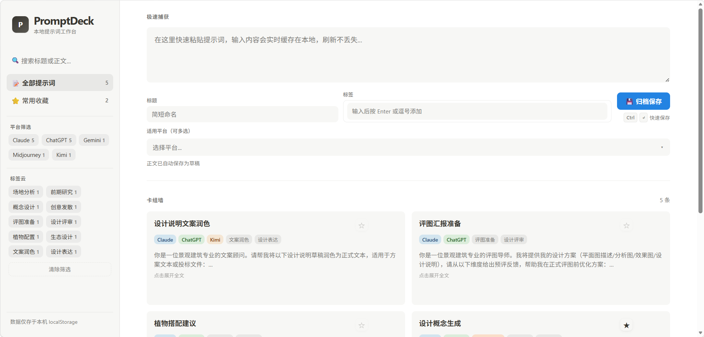
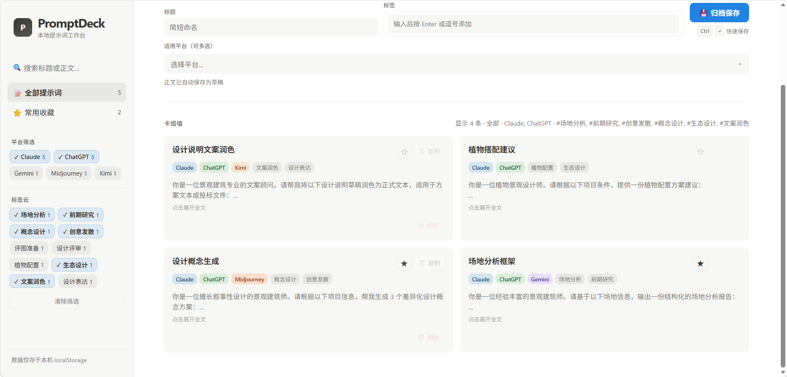

The Problem
Designers working with AI tools face a recurring frustration: prompts disappear. A network drop wipes a draft. A useful prompt from last week is buried in chat history. Switching between Claude, ChatGPT, and Midjourney means starting from scratch each time. No existing tool was built with design workflows in mind—most are either too heavy (built for dev teams) or too light (just bookmarks).
What I Built
Intentional Constraints
No user accounts. No cloud sync. No AI API calls. No auto-categorization. Every feature cut was a deliberate decision to keep the tool lightweight, private, and instantly usable without setup. The target user doesn't want another SaaS subscription—they want something that works offline, immediately.
What I Learned
This was my first end-to-end product build. I identified the problem from my own workflow, surveyed what existed, defined the MVP scope, and shipped a working tool in one week using vibe coding (VS Code + Cline + DeepSeek API). The LA template pack is the moat—it's the part no generic tool would think to build, and the part that makes this tool specific enough to be useful.